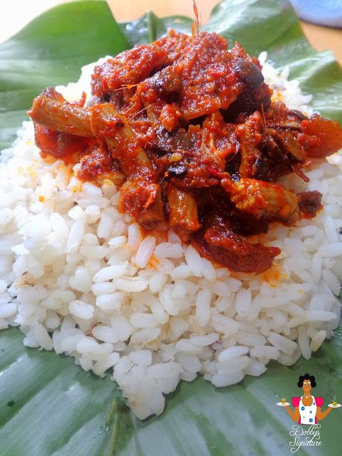

The culture, beliefs, food and mode of dressing for the three major ethnic group in Nigeria.
RELIGION
IGBO Igboland’s traditional religion is based on the belief that there is one creator, God, also called Chineke or Chukwu. The creator can be approached through numerous other deities and spirits in the form of natural objects, most commonly through the god of thunder (Amadioha). There is also the belief that ancestors protect their living descendants and are responsible for rain, harvest, health and children. Shrines, called Mbari, are made in honour of the earth spirit and contain tableaux of painted earth. Other shrines keep wooden figures representing ancestors and patrons. The evidence of these shrines, oracle houses and traditional priest in the villages still emphasise people’s beliefs, though with the western influence, Christianity has taken a more dominant role in modern Igboland. Nowadays, there are a large number of churches as well as mosques and traditional religion worship centres available in Enugu State. The state is predominantly made up of Christians (some argue that history has it that Igbos descended from Israel), and there is no acrimony between the adherents of the different religious beliefs.

LANGUAGE
FOOD
IGBO Ogbono soup is a Nigerian dish made with ground ogbono seeds, with considerable local variation. Besides the seeds, water, and oil, it typically contains leaf vegetables, other vegetables, seasonings, and meat.
ONUGBU SOUP
The Ofe Akwu (which literally means Palm Fruit Stew) is native to the South Eastern part of Nigeria. Unlike the Urhobo Ofe Akwu stew called Banga, which is mainly used as soup for starch or eba, the Igbo Ofe Akwu is best served as stew for boiled white Rice.
OFEAKWU
YORUBA
OFADA RICE
Yoruba is one of the three major Nigerian ethnic groups aside Hausa and Igbo. Most yoruba foods are usually a blend of different colorful food elements, it is always a pleasant sight to behold', that's the way the Yorubas like to eat, they like a combination of soups/stew/ assorted meat plus eba or pounded yam.

AMALA AND EWEDU
Ofada rice is a name for heritage varieties of rice grown in south-west Nigeria. It is used in a variety of dishes. Ofada rices are mostly blends, and some of the rice varieties in the blends are not indigenous to Africa; however, they usually also contain African rice.
HAUSA Tuwo Shinkafa These rice balls are the most welcome and most known Hausa food in restaurants. It's usually prepared with the soft rice variety. You can see it served with soups, like Miyan Taushe and Miyan Kuka. If you want to prepare this dish, you must choose the soft rice.
TUWO SKINKAFA
Tuwon masara is a corn flour dish eaten in the northern part of Nigeria. The term tuwon masara is formed from two Hausa words; tuwo and masara. The n added to tuwo is a preposition "of". So tuwon masara simply means cocked cornmeal of maize or maize cooked cornmeal.
TUWO-MASARA
ATTIRE
IGBO Modern Igbo traditional attire is generally made up, for men, of the Isiagu top which resembles the African Dashiki. Isiagu (or Ishi agu) is usually patterned with lions heads embroidered over the clothing, It can also be plain, (usually black). Before the advent of this material and other fabrics, Igbo men preferred wearing a loincloth. This is a piece of garment that covers the private parts of the male body.The loincloth was often kept in place by a belt or fastened at the back.This is worn to the farms and markets back then. As civilization took place in this part of the world, there were different fabrics adorned by men.
In modern Igbo society, women usually wear a puffed sleeve blouse along with two wrappers and a headscarf. Accessories like necklaces are also worn as a beautiful decoration to the outfit.
YORUBA Clothing in Yoruba culture is gender sensitive. For men's' wear, they have Bùbá, Esiki and Sapara, which are regarded as Èwù Àwòtélè or under wear, while they also have Dandogo, Agbádá, Gbariye, Sulia and Oyala, which are also known as Èwù Àwòlékè / Àwòsókè or over wears. Some fashionable men may add an accessory to the Agbádá outfit in the form of a wraparound (Ìbora).
The most commonly worn by yoruba women are Ìró (wrapper) and Bùbá (blouse–like loose top). Women also have matching Gèlè (head gear) that must be put on whenever the Ìró and Bùbá is on. Apart from this, they also have ìborùn (Shawl) and Ìpèlé (which are long pieces of fabric that usually hang on the left shoulder and stretch from the hind of the body to the fore).
HAUSA
The Hausa people are known for their elaborate dressing. They have a very restricted dressing code which is majorly due to their religious beliefs. The men wear large flowing gowns known as 'Babban riga' and a robe-like dress with designs called 'Jalabia' or 'Juanni'

The men's traditional attire includes unique attires called Babban Riga that are commonly paired with jalabia and juanni robes. The majority of the male population also wears color-rich hats known as Fula that vary from person to person depending on the region they live in. The central decorations of men's clothing are the various kinds embroidery ornaments, with gold being the favorite. Hausa woman can be easily recognized outdoors because of the colorful outfit that are called abaya. However, that doesn't mean that all Hausa tribe people look alike. In terms of color and embroidery choices, you can see that tailors come up with hundreds of exciting designs. It's a classic "we'll work with what we have" approach, as Hausa traditional attires have something to offer every taste